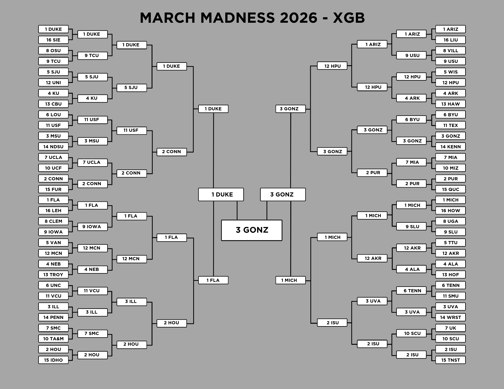
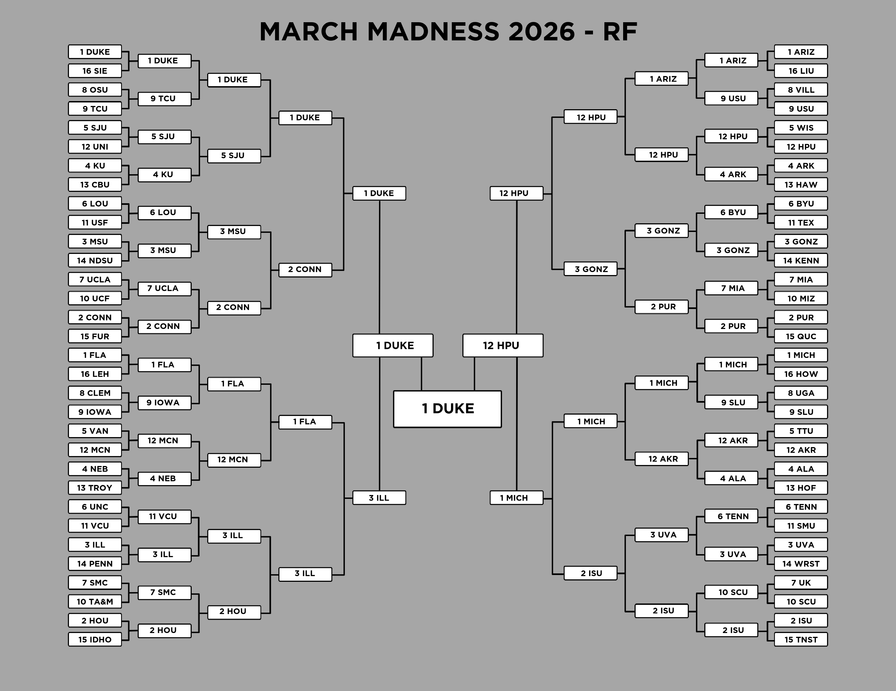
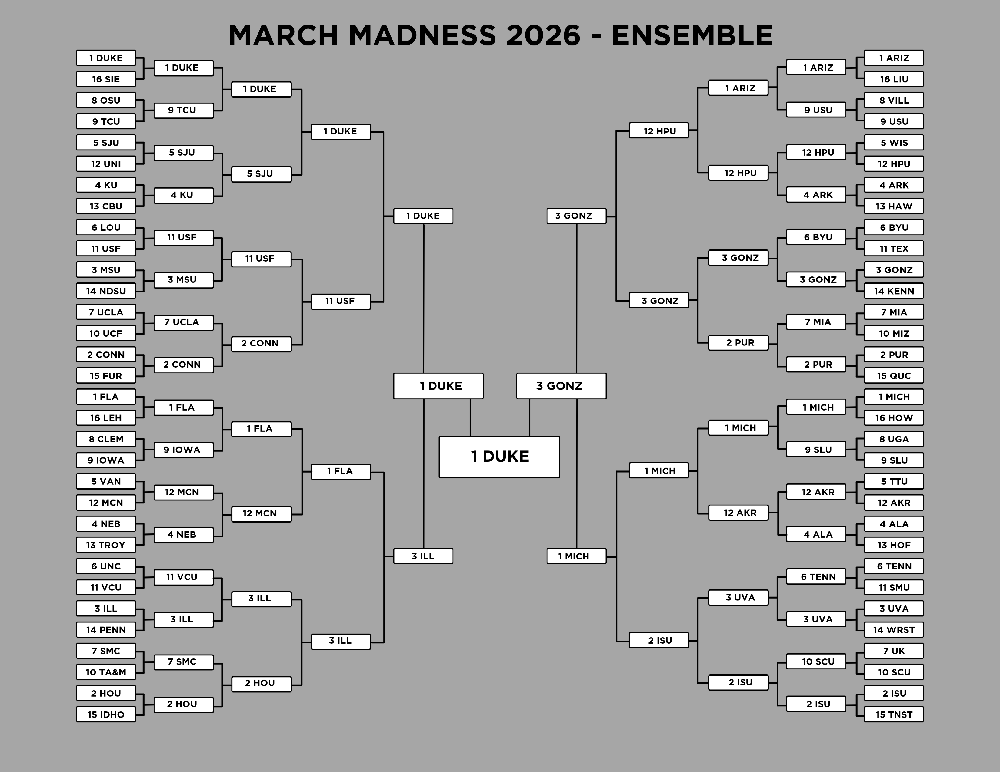

Overview
The NCAA Tournament is one of the most unpredictable events in sports. As the head of the Men's Basketball Sports Analytics Club at Notre Dame, I wanted to approach this issue with the help of machine learning and analytics. My team and I decided we would treat the project as a research and testing opporitunity to try three differnet machine learning models (lm, xgb, and rf) and report on our results. We used a three step process to clean data, develop our models, and report our findings.
1. Data Cleaning
Pulled college basketball data over the last 10 years from hoopR and filtered down to 19 different metrics to train the models on. The final data set found the stat differnetials to give the models details on how the teams matchup with each other.
2. Model Testing
trained Linear Regression, Random Forest, and XGBoost models with the cleaned data, then tested the models on the NCAA Tournament games from 2025. Games from the last 3 years and tournament games were weighted higher in the training.
3. Evaluate Performance
Each model's bracket was entered into NCAA's Bracket Challenge which scored each bracket as the tournament goes on. The models were also used to predict the margin of all 64 games, then compared to the real game outcomes.
You can find the four brakets made by the models and the documents explaining the project and research in more detail below.
Brackets



Documents
March Madness 2026 Project Documentation
Google Doc • 12 Pages